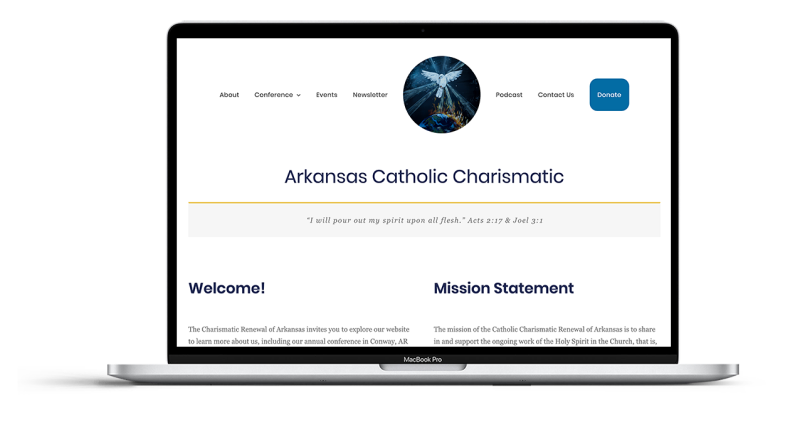

Arkansas Museum of Fine Arts (Arkansas Arts Center)

2020 - present
Tech: HTML, CSS, WordPress, Figma, Adobe Creative Suite, InVision
Work Experience:
- Managed launch of the organization's brand new website from the ground up, featuring the organization's first fully responsive design, an integrated searchable and sortable calendar of event listings, and robust SEO.
- Designed and implemented 50+ user-friendly page layouts to date using HTML and CSS to build and customize modules in a WordPress environment backed by Pattern Lab using PHP and Twig.
- Achieved over 31,000 pageviews in first month post-launch, surpassing initial goal of 10,000 by March.
- Coordinated integrations of Tessitura, Shopify, and digital gallery platforms into new site.
Metova, Inc.
2017 - 2020
Tech: HTML, CSS, WordPress, Sketch, Figma, Adobe Creative Suite, .NET, Android, Kotlin, XML, Java, SQL, Git, Zeplin, InVision
Work Experience:
- Desgined, developed, and maintained over six websites using WordPress tailored with HTML and CSS, while primarily working as an Android mobile developer.
- Developed process for design team in order to increase communication and accountability between all stakeholders and project teams from kickoff to delivery.
- Jumped into .NET project without prior experience in that platform and used HTML and CSS to improve site implementation from “good enough” to pixel-perfect despite a major time crunch.
- Contributed to a team of 10 - 20 developers to maintain and refactor a multi-threaded in-car audio streaming codebase bridging data from multiple sources.
- Maintained at least 80% code coverage in unit and integration testing to ensure clean, well-tested, and extensible code.
Client Industries: Healthcare and Telehealth, Heavy Equiptment Fleet Management, Connected Vehicle Navigation and Entertainment, Internet of Things
Arkansas Hemp Association

2019
Tech: WordPress, CSS, HTML
Goal: Using the client's existing logo to create the brand identity, I created this web presence from scratch to serve as a resource for advocates, growers, processers, and businesses to network and share knowledge, as well as to educate the public about this newly-legalized crop.
Arkansas Catholic Charismatic
2019 - 2020
Tech: WordPress, CSS, HTML
Goal: The client wanted a fresh design of their old website, introducing new features including event registration and ticketing, and a focus on building an easily maintainable, accessible, and functional website for client-facing elements and user-facing front end.
Personal

CSS CL4P-TP
2019
Tech: CSS, HTML
Goal: To explore possibilities of CSS as an artform and creative expression, experiment with more CSS shapes by making Pure CSS art.

CSS Captain America Shield
2019
Tech: CSS, HTML
Goal: To experiment with CSS shapes by making Pure CSS art

Résumé
2018 - Present
Tech: HTML, CSS
Goal: Originally built as a PDF document this site is a recreation of my favorite résumé as a responsive, mobile first, accessible website while learning BEM and SMACSS and applying knowledge of CSS flexbox

Paris
2018
Tech: HTML, CSS
Goal: This small website is built to be very image-driven in order to encourage the user to explore the site and the City of Lights focusing on accessibility, responsiveness, and utilizing floats.
Portfolio Site
2019-2021
Tech: HTML, CSS
Goal: A small static site built with vanilla HTML and CSS to showcase my design eye and technical skills. This site is updated at least once per year as my skills and work experience grow.

Intro (original portfolio)
2018
Tech: HTML, CSS
Goal: To serve as a brief introduction to my background and skillset, and experiment with HTML and CSS techniques.